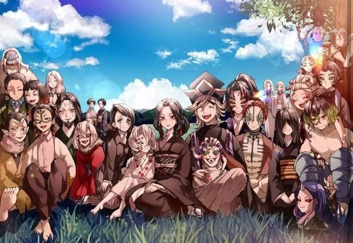
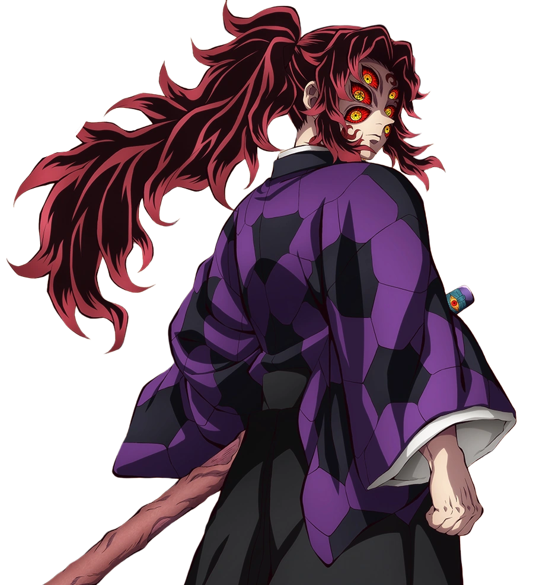
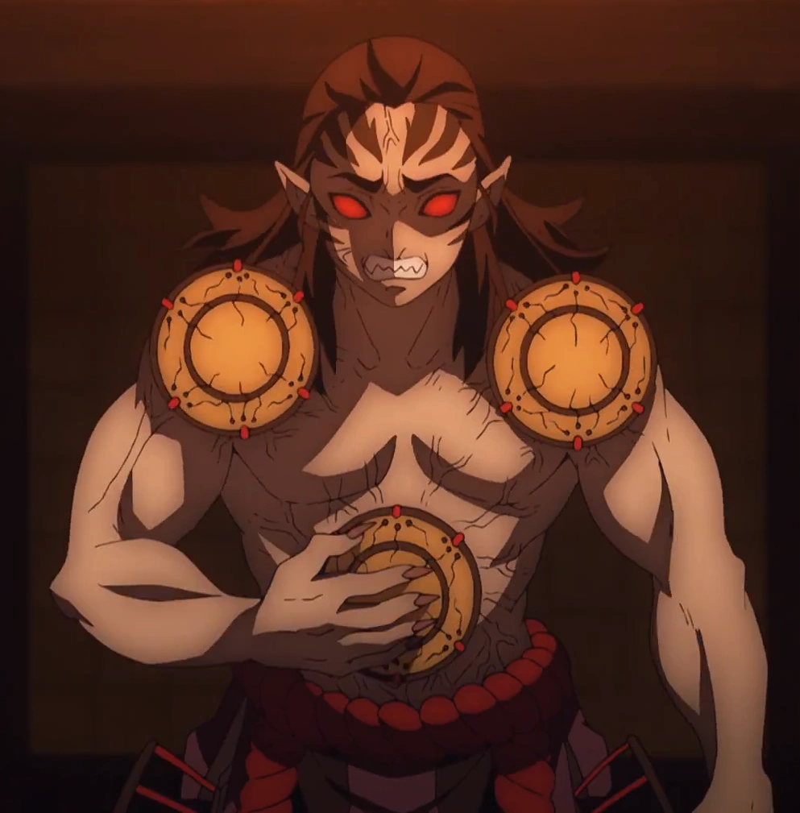

Muzan Kibutsuji
The Demon King

"From terrifying Lower Moons to unstoppable Upper Ranks, these Demons spread fear across the world and pushed the demon slayer Corps to it's limits."
The Demon King

Upper Rank One

Upper Rank Two

Upper Rank Three

Upper Rank Four

Upper Rank Five

Upper Rank Six

Lower Rank One

Lower Rank Five

Former Lower Rank Six

Prisoner of Final Selection

The Compassionate Demon

Tamayo's Loyal Comapanion